Análisis de conglomerados
Dra. Rocío Maehara
23 de noviembre de 2019

Introducción
Supóngase que el responsable de marketing de una empresa tiene una base de datos con las características sociodemográficas de sus clientes: edad, nivel educativo, nivel de ingresos, estado civil, tipo de ocupación, número de hijos, etc.
Este directivo se plantea si podría dividir a sus clientes en subgrupos, que tuvieran características sociodemográficas similares entre sí, pero que unos subgrupos de otros, fueran lo más diferentes posibles.
Introducción
Si esto fuera posible, el directivo de marketing podría, por ejemplo, diseñar campañas de publicidad distintas para cada grupo, con creatividades diferentes o utilizando diarios, revistas o cadenas de televisión distintas según el grupo al que fuera dirigida la campaña.
Introducción
E] análisis de conglomerados, al que también se denomina comúnmente análisis cluster, es una técnica diseñada para clasificar distintas observaciones en grupos, de tal forma que:
Cada grupo (conglomerado o cluster) sea homogéneo respecto a las variables utilizadas para caracterizarlo, es decir, que cada observación contenida en él sea parecida a todas las que estén incluidas en ese grupo.
- Que los grupos sean lo más distintos posible unos de otros respecto a las variables consideradas.
Introducción
Es importante señalar, para distinguir el análisis de conglomerados de otras técnicas tratadas anteriormente, que los grupos son desconocidos a priori y es necesario derivarlos de las observaciones. En el análisis discriminante o la regresión logística, por ejemplo, las observaciones ya estan previamente clasificadas en dos o más grupos, buscándose las razones que explican esa clasificación y no la clasificación en sí.
Proceso del análisis de conglomerados
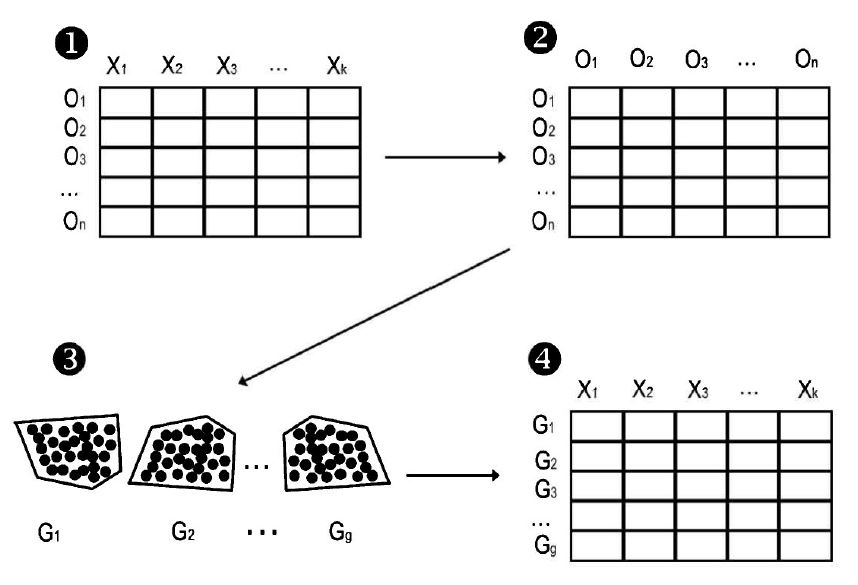
Inicialmente, el investigador dispone de \(n\) observaciones (individuos, empresas, etc.) de las que tiene información sobre \(k\) variables (edad, estado civil, número de hijos…).
- A continuación, se establece un indicador que nos diga en qué medida cada par de observaciones se parece entre sí. A esta medida se la denomina distancia o (di)similaridad.
Proceso del análisis de conglomerados
- Consiste en hacer grupos con aquellas observaciones que mas se parezcan entre sí, de acuerdo con la medida de similaridad calculada anteriormente. Ello exige elegir entre los dos tipos de análisis de conglomerados: jerárquico y no jerárquico y el método de conglomeración para el tipo de análisis elegido (centroide o vecino mas cercano, entre otros, en el conglomerado jerárquico).
Proceso del análisis de conglomerados
- Finalmente, el investigador debe describir los grupos que ha obtenido y comparar los unos con los otros. Para ello bastará con ver qué valores promedio toman las \(k\) variables utilizadas en el análisis de conglomerados en cada uno de los \(g\) grupos obtenidos (\(g < n\)).
Ejemplo
Relación entre la publicidad y las ventas
Supongamos que un investigador tiene información del presupuesto que un conjunto de empresas ha destinado a publicidad el ultimo año y de las ventas que han logrado. Puede preguntarse si estas empresas pueden agruparse en función de la rentabilidad en términos de ventas que han sido capaces de generar con su inversión publicitaria.
Ejemplo
Relación entre la publicidad y las ventas
Por ejemplo, el investigador puede examinar si existe un grupo de empresas que, invirtiendo en publicidad relativamente poco, ha logrado una elevada cifra de ventas o, por el contrario, si existe un grupo que, aun invirtiendo mucho en publicidad, no ha sido capaz de vender tanto como sus competidoras. En definitiva, ¿qué tipologia de empresas puede establecerse en función de la rentabilidad obtenida de su inversión publicitaria?
Ejemplo
Empresa <- c("E1","E2","E3","E4","E5","E6","E7","E8")
Inversion_publicitaria <- c(16,12,10,12,45,50,45,50)
Ventas <- c(10,14,22,25,10,15,25,27)
datos <- data.frame(Inversion_publicitaria,Ventas)
attach(datos)
row.names(datos)<-Empresa
plot(Inversion_publicitaria,Ventas,pch=16,xlab="Inversión",ylab="Ventas",xlim=c(5,60),ylim=c(5,30))
with(datos, text(Ventas~Inversion_publicitaria, labels = row.names(datos), pos = 4))
Ejemplo

Al haber utilizado solo dos variables en el ejemplo planteado, este gráfico permite responder de una manera intuitiva a las preguntas que se hace el investigador. A la vista de este gráfico pueden distinguirse cuatro grupos de empresas:
- El grupo formado porlas empresas E1 y E2, que, con una pequeña inversión en publicidad, han obtenido también pocas ventas.
Ejemplo

- El grupo formado por las empresas E3 y E4, que, pese a haber invertido tan poco como las empresas del grupo anterior, han obtenido una gran rentabilidad en términos de ventas a estas inversiones.
- El grupo formado por las empresas E5 y E6, que, pese a haber efectuado un gran esfuerzo publicitario, no han sido capaces de obtener unas ventas razonables.
Ejemplo

- El grupo formado por las empresas E7 y E8, que, con inversiones también elevadas, si que han logrado, por el contrario, rentabilizar su inversión en términos de ventas.
¿Cómo se han obtenido los grupos anteriores? De una manera intuitiva hemos visto, por ejemplo, que la empresa E1 esta a una distancia menor de E2 que de E3 o que de cualquiera de las empresas restantes, y las hemos puesto en un mismo grupo.
Ejemplo

De manera análoga, e igualmente intuitiva, hemos procedido con las demas empresas, llegando a la solución de cuatro grupos expuesta. Pero ¿qué hubiera ocurrido si en lugar de dos variables pretendiésemos llevar a cabo agrupaciones de observaciones teniendo en cuenta 5, 10 o 50 variables?
Ejemplo
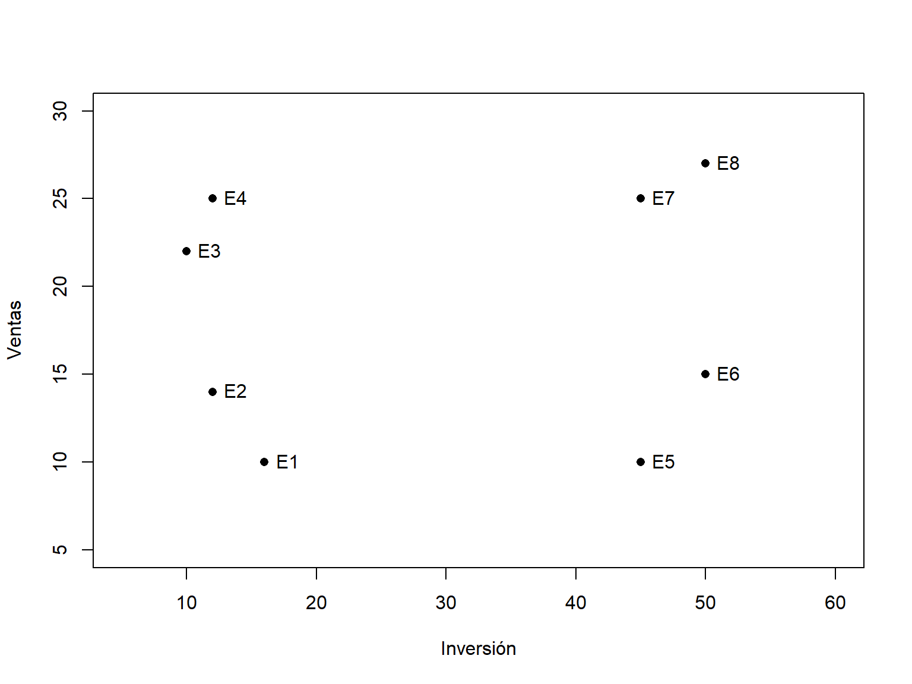
La intuición debe dejar paso a la formalización. Sin embargo, ilustraremos el proceso que sigue el análisis de conglomerados con este ejemplo sencillo para, finalmente, aplicarlo a una situación más real en el último epígrafe del capítulo.
Lo primero que se ha hecho de manera intuitiva es ver que E1 esta mas cerca de E2 que de E3. Este “más cerca” se traduce en el análisis de conglomerados en el cálculo de alguna medida de proximidad o similaridad entre cada par de observaciones.
Medidas de similaridad para variables métricas
En el caso en que las variables que se utilizan para caracterizar las observaciones sean métricas, es decir, de intervalo o de razón, se puede recurrir a cualquiera de las siguientes medidas de similaridad.
Distancia euclídea
Si consideramos dos observaciones \(i\) y \(j\) de las \(n\) posibles y si llamamos \(x_{ip}\) y \(x_{jp}\) al valor que toma la variable \(x_p\), de las \(k\) existentes en dichas observaciones, la distancia euclídea \(D_{ij}\) entre ambas se calcularia del siguiente modo: \[D_{ij}=\sqrt{\sum_{p=1}^{k}(x_{ip}-x_{jp})^2}\]
Medidas de similaridad para variables métricas
datos## Inversion_publicitaria Ventas
## E1 16 10
## E2 12 14
## E3 10 22
## E4 12 25
## E5 45 10
## E6 50 15
## E7 45 25
## E8 50 27
asi, por ejemplo, la distancia euclidea entre las empresas E1 y E2 tomael valor siguiente:
\[D_{12}=\sqrt{(16-12)^2+(10-14)^2}=5.66\] que es menor que la distancia existente entre las empresas E1 y E3:
\[D_{13}=\sqrt{(16-10)^2+(10-22)^2}=13.42\]
Ejemplo
# Distancia euclidiana
matriz.dis.euclid <- dist(datos[,1:2],method="euclidian",diag=TRUE)
round(matriz.dis.euclid,2)
## E1 E2 E3 E4 E5 E6 E7 E8
## E1 0.00
## E2 5.66 0.00
## E3 13.42 8.25 0.00
## E4 15.52 11.00 3.61 0.00
## E5 29.00 33.24 37.00 36.25 0.00
## E6 34.37 38.01 40.61 39.29 7.07 0.00
## E7 32.65 34.79 35.13 33.00 15.00 11.18 0.00
## E8 38.01 40.16 40.31 38.05 17.72 12.00 5.39 0.00
La mayoria de algoritmos calculan las distancias entre todos los pares de observaciones, como paso inicial del análisis de conglomerados. Mostramos la matriz euclidiana obtenida con el R con la función dis()
Medidas de similaridad para variables métricas
Distancia de Minkowski
Las distancia euclídea y distancia eucídea al cuadrado son un caso particular de la distancia de Minkowski, que viene dada porla expresión: \[D_{ij}=[\sum_{p=1}^{k}|x_{ip}-x_{jp}|^n]^{1/n}\] Puede comprobarse que haciendo \(n = 2\) se obtiene la expresién correspondiente a la distancia euclídea.
Medidas de similaridad para variables métricas
Distancia city block o “Manhattan”
Si en la expresion de la distancia de Minkowski tomaramos \(n = 1\), obtendríamos la denominada distancia city block, la cuál viene dada por: \[D_{ij}=\sum_{p=1}^{k}|x_{ip}-x_{jp}|\]
Estandarización de los datos
Si se analizan con detenimiento las medidas de distancia presentadas, se puede comprobar que todas ellas estén basadas en la sustracción, para cada par de observaciones, de los valores de las variables utilizadas en su caracterización. Por ello, se puede esperar que las medidas de disimilaridad sean muy sensibles a las unidades en que estén medidas dichas variables. Si pretendemos agrupar empresas en función de dos variables, como el tamaño de su activos medido en pesetas y el número de trabajadores, la primera variable contribuirá mucho mas a establecer los grupos que la segunda. Y esto no se debe a que conceptualmente una sea mucho mas importante que la otra, sino a que, con esas unidades, su valor absoluto será siempre muy superior.
Estandarización de los datos
nombre.empresa2<-c("E1","E2","E3","E4","E5","E6","E7","E8")
activos<-c(10.0e9,10.5e9,10.0e9,10.5e9,20.0e9,20.5e9,20.0e9,20.5e9)
trabajadores<-c(100,90,200,190,200,190,100,90)
Datos_EST<-data.frame(nombre.empresa2,activos,trabajadores)
Datos_EST
## nombre.empresa2 activos trabajadores
## 1 E1 1.00e+10 100
## 2 E2 1.05e+10 90
## 3 E3 1.00e+10 200
## 4 E4 1.05e+10 190
## 5 E5 2.00e+10 200
## 6 E6 2.05e+10 190
## 7 E7 2.00e+10 100
## 8 E8 2.05e+10 90Los datos presentados recogen el tamaño de los activos y el número de trabajadores de ocho empresas hipotéticas. Si efectuamos un análisis de conglomerados con las unidades originales, la matriz de distancias mostrará que los dos grupos obtenidos responden exclusivamente a la variable “activos de la empresa”, puesto que sitúa en un mismo grupo a aquellas con cifras que rondan los 10000 millones de pesetas (E1, E2, E3 y E4) y en otro grupo a las que tienen activos en torno a los 20000 millones (E5, E6, E7 y E8).
Estandarización de los datos
matriz.dis.euclid2<-dist(Datos_SEST[,c("activos","trabajadores")],method="euclidean",diag=TRUE)
matriz.dis.euclid2
## 1 2 3 4 5 6 7 8
## 1 0.00e+00
## 2 5.00e+08 0.00e+00
## 3 1.00e+02 5.00e+08 0.00e+00
## 4 5.00e+08 1.00e+02 5.00e+08 0.00e+00
## 5 1.00e+10 9.50e+09 1.00e+10 9.50e+09 0.00e+00
## 6 1.05e+10 1.00e+10 1.05e+10 1.00e+10 5.00e+08 0.00e+00
## 7 1.00e+10 9.50e+09 1.00e+10 9.50e+09 1.00e+02 5.00e+08 0.00e+00
## 8 1.05e+10 1.00e+10 1.05e+10 1.00e+10 5.00e+08 1.00e+02 5.00e+08 0.00e+00Es decir, la influencia del número de trabajadores en la obtención de estos conglomerados es practicamente nula. Para evitar esta influencia no deseable de una variable debida exclusivamente a la unidad en que viene medida es necesario corregir el efecto de los datos recurriendo a un proceso de estandarización.
Estandarización de los datos
Puntuaciones Z
Los datos son estandarizados, restando al valor de cada observación de una variable determinada,la media de esa variable para el conjunto de las observaciones y dividiendo el resultado por su desviación típica. De esta forma la variable estandarizada tiene media 0, y desviación típica, 1.
Rango 1
El valor de una variable dada en cada observación es dividido por el rango de esa variable para el conjunto de observaciones. De esta forma el rango de variación de la variable así estandarizada queda reducido a un intervalo de valor 1.
Estandarización de los datos
Rango 0 a 1
El valor de una variable determinada para cada observación es estandarizada sustrayéndole el valor mínimo que toma esa variable en el conjunto de las observaciones y a continuación dividiendo por el rango. De esta forma el valor mínimo de las variables sera 0, y el máximo, 1.
Estandarización de los datos
Datos_EST<-scale(Datos_SEST[,c("activos","trabajadores")])
matriz.dis.euclid.norm<-dist(Datos_EST[,c("activos","trabajadores")],method="euclidean",diag=TRUE)
round(matriz.dis.euclid.norm,2)
## 1 2 3 4 5 6 7 8
## 1 0.00
## 2 0.21 0.00
## 3 1.86 2.05 0.00
## 4 1.68 1.86 0.21 0.00
## 5 2.64 2.71 1.87 1.78 0.00
## 6 2.58 2.64 1.97 1.87 0.21 0.00
## 7 1.87 1.78 2.64 2.44 1.86 1.68 0.00
## 8 1.97 1.87 2.84 2.64 2.05 1.86 0.21 0.00
Veamos si estandarizando los datos del ejemplo mediante el procedimiento de las puntuaciones Z, se logra corregir la influencia desproporcionada de la variable activos de la empresa en la formación de los grupos. Usaremos para ello la función scale{base}.
Estandarización de los datos
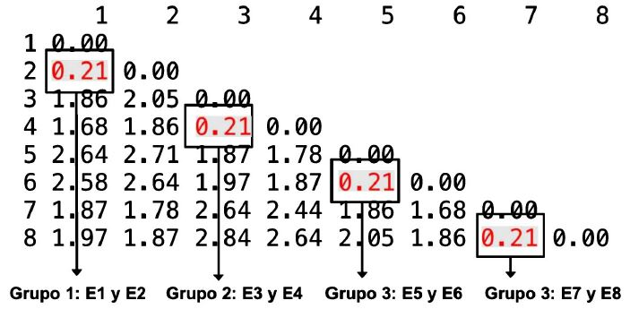
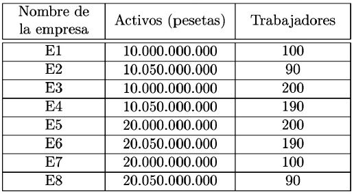
Ahora aparecen cuatro grupos formados por dos empresas que se parecen mucho entre sí. Asi, el formado por E1 y E2 tienen activos en torno a los 10.000 millones, pero los separa del grupo formado por E3 y E4 el hecho de que estas últimas empresas les doblan en términos de número de trabajadores. Se observa como, estandarizando los datos, se elimina el efecto de las unidades de medida y las dos variables que caracterizan las observaciones tienen el mismo peso a la hora de formar los grupos.
Formación de los grupos
Los algoritmos de agrupación existentes responden a dos grandes enfoques:
Métodos jerárquicos: Existen dos enfoques
* Métodos jerárquicos aglomerativos: inicialmente cada individuo es un grupo en sí mismo. Sucesivamente se van formando grupos de mayor tamaño fusionando grupos cercanos entre sí. Finalmente, todos los individuos confluyen en un solo grupo.
- Métodos jerarquicos desagregativos: inicialmente, todos los individuos forman un único grupo y se van sucesivamente desgajando de él, formando dos grupos, tres grupos y asi hasta que al final del proceso cada caso forma un único grupo.
La mayoría de paquetes estadísticos usan el primer enfoque.
Principales algoritmos de agrupamiento jerárquico
Método del centroide
- Está implementado en la función de
R,hclust{stats}. - En primer lugar, se calcula la matriz de distancias, en este caso euclidea al cuadrado, entre las ocho empresas usando el siguiente código de R.
library(stats)
#calculo de la distancia euclídea
matriz.dis.euclid<-dist(datos[,c("Inversion_publicitaria","Ventas")],method="euclidean",diag=TRUE)
#calculo de la distancia euclidea al cuadrado
matriz.dis.euclid2<-(matriz.dis.euclid)^2
matriz.dis.euclid2Método del centroide
## E1 E2 E3 E4 E5 E6 E7 E8
## E1 0
## E2 32 0
## E3 180 68 0
## E4 241 121 13 0
## E5 841 1105 1369 1314 0
## E6 1181 1445 1649 1544 50 0
## E7 1066 1210 1234 1089 225 125 0
## E8 1445 1613 1625 1448 314 144 29 0
- Se puede apreciar la matriz de distancias euclídeas al cuadrado.
- En esta matriz se puede apreciar que las empresas más cercanas son E3 y E4.
Método del centroide
#efectuamos el cluster con método centroide
hclust.centroide<-hclust(matriz.dis.euclid2,method="centroid")
#Saca el historial de aglomeración del objeto hclust.centroide
data.frame(hclust.centroide[2:1])## height merge.1 merge.2
## 1 13.00 -3 -4
## 2 29.00 -7 -8
## 3 32.00 -1 -2
## 4 50.00 -5 -6
## 5 141.25 1 3
## 6 182.25 2 4
## 7 1227.25 5 6
- Pues bien, el método del centroide comienza uniendo aquellas dos observaciones que estén més cercanas, en este caso las empresas E3 y E4 (la distancia es 13).
- A continuación el grupo formado es sustituido por una observación que lo representa y en la que las variables toman los valores medios de todas las observaciones que constituyen el grupo representado (centroide).
- En nuestro ejemplo, las empresas E3 y E4 son sustituidas por una empresa promedio, que
Método del centroide
datos## Inversion_publicitaria Ventas
## E1 16 10
## E2 12 14
## E3 10 22
## E4 12 25
## E5 45 10
## E6 50 15
## E7 45 25
## E8 50 27En nuestro ejemplo, las empresas E3 y E4 son sustituidas por una empresa promedio, que llamaremos E3-4, para la que el gasto en publicidad y las ventas toman los siguientes valores: \[Publicidad-E3-4=\frac{10+12}{2}=11\] \[Ventas-E3-4=\frac{22+25}{2}=23.5\] En ese momento se recalcula la matriz de distancias, solo que, en lugar de estar presentes las empresas E3 y E4, esta su centroide E3-4.
Método del centroide
#efectuamos el cluster con método centroide
hclust.centroide<-hclust(matriz.dis.euclid2,method="centroid")
#Saca el historial de aglomeración del objeto hclust.centroide
data.frame(hclust.centroide[2:1])## height merge.1 merge.2
## 1 13.00 -3 -4
## 2 29.00 -7 -8
## 3 32.00 -1 -2
## 4 50.00 -5 -6
## 5 141.25 1 3
## 6 182.25 2 4
## 7 1227.25 5 6
hclustmuestra esas distancias sucesivas en lo que denominamos el historial de conglomeración.- En el paso 5 se fusionan las empresas que lo hicieron en el paso 1 (E3-4) con las quelo hicieron en el paso 3 (E1-2).
- El proceso termina cuando todas las empresas estan en un solo grupo.
Método del centroide
#dendograma centroide
plot.hclust<-plot(hclust.centroide)
rect.hclust(hclust.centroide, k = 2, border = "red")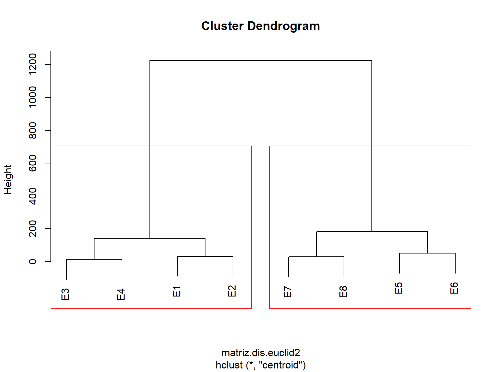
- El historial de conglomeración tiene una traducción gráfica que es de gran utilidad para determinar el número razonable de grupos que debe retenerse.
- A este gráfico se le denomina dendograma.
- Obsérvese como los grupos que se formaron en la etapa 5 (empresas 3, 4, 1 y 2) y los que se formaron en la 6 (7, 8, 5 y 6) estan a tal distancia que no es razonable fusionarlos. Esos dos grupos son los que el analista deberia retener.
Método del vecino más cercano
En algunos textos aparece también bajo la etiqueta de vinculación simple single linkage, la distancia entre dos grupos es aquella que se da entre los dos miembros mas cercanos de esos grupos.
- Para realizar en R la metología del vecino más cercano se usaran los siguientes comandos para obtener el historial de aglomeración:
#efectuamos el cluster con método centroide con método del vecino más cercano
hclust.cercano<-hclust(matriz.dis.euclid2,method="single")
#Saca el historial de aglomeración del objeto hclust.centroide
data.frame(hclust.cercano[2:1])Método del vecino más cercano
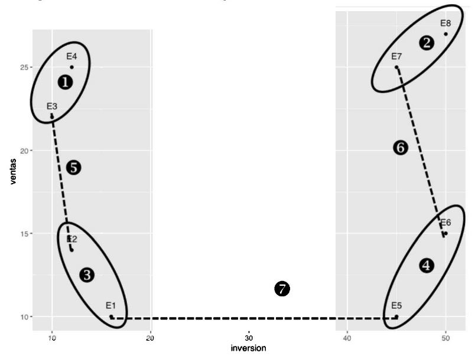
## height merge.1 merge.2
## 1 13 -3 -4
## 2 29 -7 -8
## 3 32 -1 -2
## 4 50 -5 -6
## 5 68 1 3
## 6 125 2 4
## 7 841 5 6
La distancia entre los grupos E1-2 y E3-4 estará representada por la distancia entre E2 y E3, que son los mas cercanos (68 unidades, puesto que E1 dista 180 unidades de E3, y de E4, 241 unidades, mientras que E2 dista 121 unidades de E4.
- El coeficiente de la etapa 6 es 125, que se corresponde con la distancia entre E6 y E7, que son los “vecinos mas cercanos” de sus respectivos grupos.
Método del vecino más lejano
- El método del vecino mas lejano, al que también se refieren algunos textos como vinculación completa, complete linkage.
- La distancia entre dos grupos se mide por la distancia entre sus miembros mas alejados.
- Para realizar en R la metología del vecino más lejano se usaran los siguientes comandos para obtener el historial de aglomeración:
#efectuamos el cluster con método vecino más lejano
hclust.lejano<-hclust(matriz.dis.euclid2,method="complete")
data.frame(hclust.lejano[2:1])Método del vecino más lejano
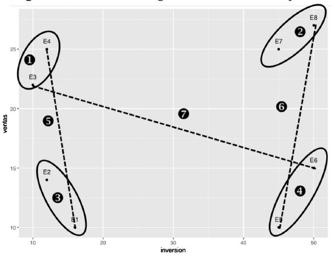
## height merge.1 merge.2
## 1 13 -3 -4
## 2 29 -7 -8
## 3 32 -1 -2
## 4 50 -5 -6
## 5 241 1 3
## 6 314 2 4
## 7 1649 5 6Puede comprobarse ahora que el coeficiente de la etapa 5 es 241, que se corresponde con la distancia entre las empresas E1 y E4, o que en la etapa 7 el coeficiente es 1649, correspondiéndosecon la distancia entre las empresas 3 y 6.
Método de la vinculación promedio
Conocido también como average linkage, la distancia entre dos grupos se obtiene calculando la distancia promedio entre todos los pares de observaciones que pueden formarse tomando un miembro de un grupo y otro miembro del otro grupo.
- Para realizar en R la metología de la vinculación promedio se usaran los siguientes comandos para obtener el historial de aglomeración:
#efectuamos el cluster con método vinculación promedio
hclust.promedio<-hclust(matriz.dis.euclid2,method="average")
data.frame(hclust.promedio[2:1])Método de la vinculación promedio
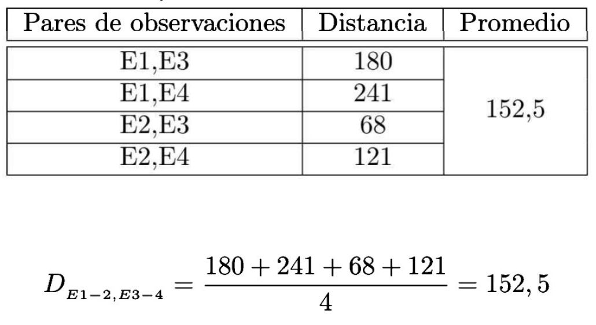
## height merge.1 merge.2
## 1 13.000 -3 -4
## 2 29.000 -7 -8
## 3 32.000 -1 -2
## 4 50.000 -5 -6
## 5 152.500 1 3
## 6 202.000 2 4
## 7 1323.625 5 6
Se observa como en la etapa 5 se fusiona el grupo formado por las empresas E1 y E2 (etiquetado como 3) con el formado por las empresas E3 y E4 (etiquetado como 1).
- La imagen muestra como se obtiene la distancia de 152.5 usando todas las posibles combinaciones entre pares de puntos de los grupos E1-2 y E3-4 en las que hay un miembro de cada grupo.
Método de Ward
Se trata de un método general. La selección del par de clusters que se combinan en cada paso del agglomerative hierarchical clustering se basa en el valor óptimo de una función objetivo, pudiendo ser esta última cualquier función definida por el analista. El conocido método Ward’s minimum variance es un caso particular en el que el objetivo es minimizar la suma total de la varianza intra-cluster. En cada paso, se identifican aquellos 2 clusters cuya fusión conlleva menor incremento de la varianza total intra-cluster.
Método de Ward
#efectuamos el cluster con método de Ward
hclust.ward<-hclust(matriz.dis.euclid2,method="ward.D")
data.frame(hclust.ward[2:1])## height merge.1 merge.2
## 1 13.0 -3 -4
## 2 29.0 -7 -8
## 3 32.0 -1 -2
## 4 50.0 -5 -6
## 5 282.5 1 3
## 6 364.5 2 4
## 7 4909.0 5 6
- Por ejemplo en el paso 6, la heterogeneidad total medida del modo descrito seria: 364.5 que es la menor de todas las posibles fusiones y por eso es la que el análisis de conglomerados elige, como se observa en el historial de conglomeración de ese mismo cuadro.
Elección entre los distintos métodos de agrupación
- El método del vecino más cercano es más sensible a la presencia de observaciones anómalas (outliers) que el método del vecino más lejano.
- El método del vecino más lejano identifica habitualmente grupos muy homogéneos, en los que las observaciones son muy parecidas unas a otras.
- El método de Ward tiende a encontrar conglomerados no solo muy compactos, sino también de tamaño similar.
- El método del vecino más cercano tiene tendencia a crear menos grupos que el del vecino mas lejano.
Selección del número de conglomerados de la solución
Algunos autores han revisado e implementado en R un conjunto de índices que, si bien de manera individual pueden tener mayor o menor eficacia en la detección del número óptimo de conglomerados, tomados en su conjunto pueden ser de gran ayuda en la medida en que una mayoría de ellos apunten a una solución determinada. Nos centraremos en aquellos que son compartidos por más paquetes de R, en concreto el índice DB y el índice de Dunn, junto con dos índices con soporte grafico, el Índice de Hubert y el Dindex.
Índice DB
Es una función del ratio entre la dispersión interna de cada cluster y la separación entre ellos. Se calcula mediante la expresión: \[DB(q)=\frac{1}{q} \sum_{k=1}^{q} \operatorname*{máx}_{k \neq l} \left(\frac{\delta_k+\delta_l}{d_{kl}}\right)\] donde \(k,l=1,\ldots,q\;\) número del conglomerado,
\(d_{kl}=\sqrt[v]{\sum_{j=1}^{p} |c_{kj}-c_{lj}|^v}\) es la distancia entre los centroides de los conglomerados \(C_k\) y \(C_l\)
\(\delta_k=\sqrt[u]{ \frac{1}{n_k} \sum_{i \in C_k} \sum_{j=1}^{p} |x_{ij}-c_{kj}|^u}\) es la medida de la dispersión del cluster \(C_k\)
Pues bien, el valor \(q\) que minimiza \(DB(q)\) se considera el número adecuado de conglomerados.
Índice de Dunn
Define la ratio entre la mínima distancia intraconglomerado y la máxima distancia interconglomerado. Lo hace del siguiente modo: \[\text{Dunn}= \operatorname*{mín}_{1 \leq i < j \leq q } d\left(C_i,C_j\right) / \operatorname*{máx \quad diam \left(C_k\right)}_{1 \leq k \leq q} \] donde \(d\left(C_i,C_j\right)\) es la función de disimilaridad entre dos conglomerados \(C_i\) y \(C_j\) definida como \[d\left(C_i,C_j\right)=\operatorname*{mín}_{x \in C_i, y \in C_j } d\left(x,y\right)\] es el diámetro de un conglomerado que puede considerarse como una medida de dispersión. Si los datos contienen conglomerados compactos y bien separados, el diámetro de los mismos debería ser pequeño y la distancia entre los conglomerados se espera que sea grande, de esta forma se maximizaría el índice de Dunn.
Estadístico de Hubert
El estadístico \(\Gamma\) de Hubert es el coeficiente de correlación serial entre dos matrices que, cuando son simétricas, puede escribirse del siguiente modo: \[\Gamma(P,Q)=\frac{1}{N_t} \sum_{i=1}^{n-1} P_{ij}Q_{ij}, \quad i<j\] donde \(P\) es la matriz de proximidad del conjunto de datos y \(Q\) es una matriz \(n \times n\) cuyo elemento \((i, j)\) es igual a la distancia entre dos puntos representativos \((v_{ci}, v_{cj})\) de los conglomerados a los que pertenecen \(x_i\) y \(x_j\).
Valores altos del estadístico \(\Gamma\) normalizado indican la existencia de conglomerados compactos, por lo que en el gráfico en el que se relaciona \(\Gamma\) y \(q\) (número de conglomerados) buscaremos un punto de inflexión que se corresponda con un incremento significativo de \(\Gamma\). El número de conglomerado donde esto ocurra sera el óptimo.
Índice Dindex
se basa en la ganancia de inercia dentro del conglomerado, que mide el grado de homogeneidad de los datos asociados con ese grupo. Calcula las distancias y las compara con un punto de referencia del perfil, normalmente el centroide. Se define: \[w(P^q)=\frac{1}{q} \sum_{k=1}^{q} \frac{1}{n_k} \sum_{i \in C_k} d(x_i,c_k)\] Dadas dos particiones \(P^{k-1}\) formadas por \(k—1\) conglomerados y \(P^k\) particiones formadas por \(k\) conglomerados, la ganancia de inercia intraconglomerado se define por: \[Gain=w(P^{q-1})-w(P^q)\] debiendo minimizarse el valor de Gain, lo que se identifica con un recodo en el gráfico que se corresponde con una caída significativa de las primeras diferencias de Gain cuando se representa frente al número de conglomerados a cuya identificación ayuda el equivalente crecimiento en las segundas diferencias que debe acompañarle.
Identificación del número adecuado de conglomerados
- Se genera una base de datos simulada de dos variables y 200 casos donde los conglomerados estén perfectamente separados, en la medida en que son datos aleatorios que siguen una normal dondelas medias de cada conglomerado son, respectivamente, 1, 3, 6 y 9 con distintas varianzas.
- Se puede apreciar claramente que existen cuatro conglomerados muy definidos que el conjunto de índices es capaz de detectar, la confianza en la eficacia del sistema de índices para detectar el número adecuado de grupos en situaciones no evidentes se refuerza.
Identificación del número adecuado de conglomerados
set.seed(1)
x<-rbind(matrix(rnorm(100,sd=0.1),ncol=2),
matrix(rnorm(100,mean=1,sd=0.2),ncol=2),
matrix(rnorm(100,mean=5,sd=0.1),ncol=2),
matrix(rnorm(100,mean=7,sd=0.2),ncol=2))
DatosCaso3.2<-data.frame(x)
#Gráfico
library(ggplot2)
ggplot(data=DatosCaso3.2, aes(X1,X2)) + geom_point()
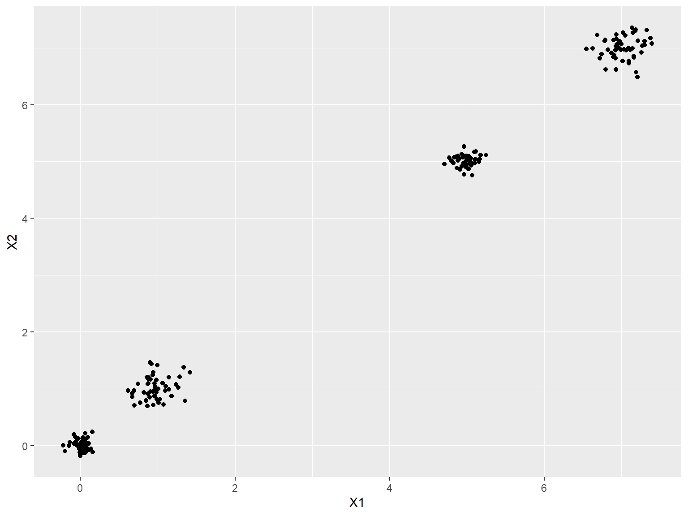
Identificación del número adecuado de conglomerados
La sentencia que solicita el cálculo de los indicadores es la siguiente:
#Pedimos los indicadores para un jerárquico con distancia euclídea y método de ward
library(NbClust)
res<-NbClust(DatosCaso3.2, distance = "euclidean", min.nc=2, max.nc=8, method = "ward.D2", index = "alllong")
res$All.index
res$Best.nc
res$Best.partition
Identificación del número adecuado de conglomerados
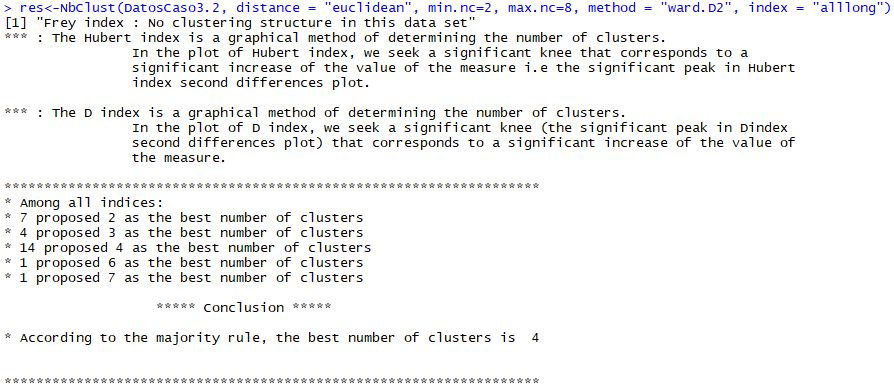
Identificación del número adecuado de conglomerados
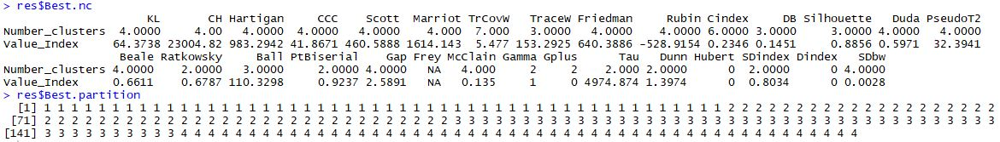
Identificación del número adecuado de conglomerados
- La opción por defecto del paquete
NbClustes lo que denomina majority rule, es decir elegir la solución que más indicadores recomiendan. - Analizar la propuesta que realizan aquellos indicadores que mejor desempeño han demostrado en los ejercicios de simulación. Los mejores cinco indicadores serian los indices: CH, Duda, Cindex, Gamma y Beale.
Identificación del número adecuado de conglomerados
- Si analizamos los cinco indicadores que se supone que tienen un mejor desempeño, la propuesta de los mismos seria: CH (4), Duda (4), Cindex (6) y Beale (4), lo que parece corroborarla regla de la mayoría.
- Aunque el apoyo de estos índices es tremendamente valioso y supone una gran mejora sobre la mera consulta del dendograma, el investigador no debe olvidar que la mejor validación de los conglomerados es que estos tengan sentido y puedan interpretarse en el contexto del problema de investigación.
Elección entre análisis de conglomerados jerárquico y no jerárquico
- Si el investigador tiene una presunción razonable de cuál puede ser el número de grupos naturales en que se agregan sus observaciones, el seria una buena opción.
- Los métodos jerárquicos no siempre son de posible aplicación cuando los tamaños muestrales son muy altos y/o con numerosas variables y eso independientemente del incremento en la potencia de los ordenadores.